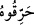
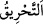
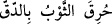

“Katl (öldürme)”nin asıl anlamı, ölüm (mevt) gibi ruhun bedenden ayrılması ve
çıkmasıdır. Ancak bu işi yapanın (üstlenenin) fiili göz önünde tutulduğunda “katl”
olarak isimlendirilir. Şayet hayatın bittiğine ve geçtiğine itibar edilirse buna da “mevt”
denilir.
“Yahut yakın!” Bu fiil (), “ (tahrîk)”den, yâni tef’îl babından gelmektedir.
“tahrîk” ve “ihrâk” ile “hark” arasındaki fark şudur: Birincisi, alevli ateşin
yakmasıdır. Bu fiilden istiâre alınarak denilir ki: “Beni kınama ve azarlamasıyla yaktı.”
Bir kimse diğerini kınayarak ve azarlayarak ona eziyet edip aşırı gittiği zaman böyle
denilir.
İkincisi, alevsiz olarak ateşin vuku bulmasıdır. Ateşin elbisenin içine işleyerek
yakmasına da “ tabiri kullanılır. Nitekim el-Müfredât’da bu şekilde
kaydedilmiştir.
Âyette, İbrâhim (a.s.)’ın kavminin sefih ve alçaklığına delil vardır; zira onlar,
kendilerine delil getiren kimseye, öldürmekle veya yakmakla karşılık vermişlerdir. İşte
ötedenberi delil ve huccete mağlûb olanların âdeti böyledir.
“Ama Allah onu ateşten kurtardı.”
“Allah onu kurtardı” cümlesinin başındaki “ (fâ)” fâ-i fasiha’dır. Yani, onlar
(fâ)” fâ-i fasiha’dır. Yani, onlar
İbrahim’i ateşe attılar; Allah da onu onların elinden kurtardı ve ateşi onun için serinlik
ve selâmet yeri yaptı.
Rivâyete göre, ateşin harâreti giderildiği için yeryüzünün hiç bir yerinde o gün ateşten
faydalanılmamıştır.
“Doğrusu bunda” yâni Allah’ın İbrâhim (a.s)’ı ateşten kurtarmasında, “îman eden
bir kavim için” hayret verici apaçık âyetler, deliller ve “ibretler vardır.” Şöyle ki,
Allah Teâlâ İbrâhim (a.s.)’ı ateşin yakmasından korumuştu. O’nu bağladıkları ip yanmış
ve hemen peşinden çok büyük olmasına rağmen ateş sönmüş ve o yer gül bahçesine
dönmüştü. İşte bunda mü’minler için bir ibret vardır. Çünkü Allah’ın kudretine delâlet
eden bu hadiseyi araştıracak, onu düşünecek ve bundan faydalanacak onlardır. Kâfirler
ise, bu hâdiselerin eserlerinden faydalanmaktan mahrumdurlar.
Âyette, ruh konumundaki İbrâhim’in, nefs ve sıfatları konumundaki Nemrud’u Allah’a
dâvet ettiğine; hevâ, dünya ve mâsivallah’a yönelip ibâdet etmekten onları nehyedip
sakındırdığına işâret vardır. Onlar ise, kötü tabiatları ve alçaklıkları sebebiyle ona
şöyle cevap vermişlerdir: “Onu, küfür ve şirk kılıcıyla öldürün. Şehevî duygu ve kötü
ahlâk ateşini onun için tutuşturun ve onu yakın.” Allah ruh cevherini; şehvet ve kötü
ahlâk ateşinin yakmasından kurtarmış, ruhun yaratılışında bulunmayan, ancak Allah’a
seyr hâlinde ihtiyacı olan husûsî emânetlerle (vedîa) onu faydalandırmıştır. Bu
istifâdeden dolayı, onun bedenini (kalıp), aşağıların aşağısına (esfel-i sâfilin),
yeryüzüne göndermiştir.